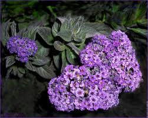

Héliotrope

Héliotrope (Heliotropium de la famille des Boraginacées)
Attention : hautement toxique par ingestion pour le Korat !
Partie toxique pour les chats en général et le Korat en particulier :
Toute la plante.
Symptômes du processus pathologique :
Forme aiguë rare : hypothermie, ictère avec oedèmes et éventuellement hémoglobinurie. Excitation ou agressivité. La mort survient en 4 à 6 jours.
Forme subaiguë à chronique fréquente : diminution progressive de l'état général, amaigrissement avec ictère, signes de gastro-entérite et éventuellement troubles nerveux chez le cheval (parésie, délire démentiel)
Lésions : nécrose et hémorragies hépatiques (formes aiguës), dégénérescence hépatique avec nécrose centrolobulaire, prolifération des canaux biliaires, fibrose hépatique, cirrhose hypertrophique (formes chroniques).
Origine de la toxicité (principe actif) :
Pyrrolizidine.